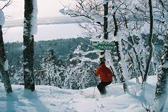

Mt. Bohemia
Jacob Michaels
Mt.Bohemia, Lac La Belle, MI.
Mt. Bohemia is a beautiful ski resort located at the very top of the Keewenaw Peninsula in Michigan's UP. From where I live in East Lansing, it takes about 8 hours to get to Mt. Bohemia, but it is worth it. What makes Mt. Bohemia so special is there are no groomers, and only 3 runs have the trees cleared out. Most of the skiing done here is through the trees. There is also no lodge or hotel for guests to stay at, so most either camp in their car or find a hotel in the nearby town, Copper Harbor. Most would be turned off by the idea of no lodge or camping in your car, but I think that makes the trip more special, because it is all about the skiing and having fun. The skiing does get intense. Most runs are very steep with rock drops through the dense trees. I'm used to small hills with no trees so this was a big surprise when I first skied here. Another great thing about Mt. Bohemia is how cheap the lift tickets are. My friends and I always get the season's pass every year, because you make your money back in only 1 weekend. If you enjoy skiing, I would definitely recommend checking out Mt. Bohemia.
Some Places I've Skied in Michigan
| Resort Name | Town | Rating (Out of 5) |
|---|---|---|
| Mt. Holly | Holly | 3 |
| Boyne Mt. | Gaylord | 4 |
| Mt. Bohemia | Lac La Belle | 5 |
| Alpine Valley | White Lake | 4 |